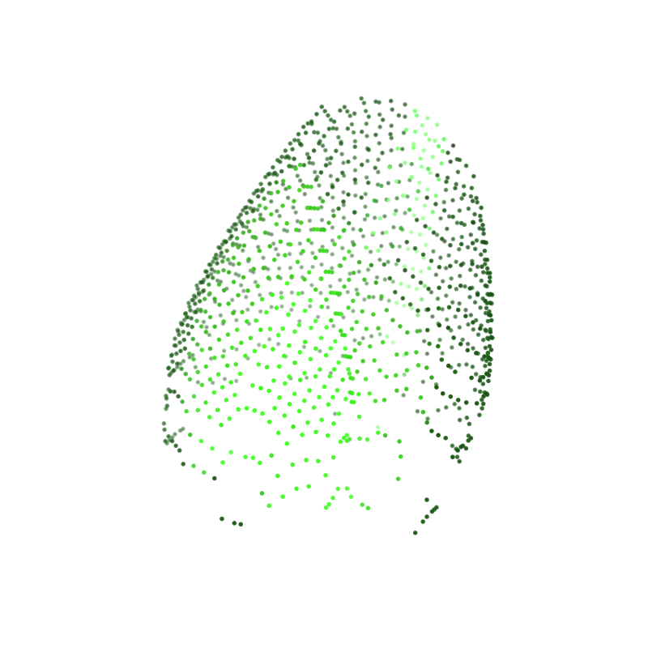
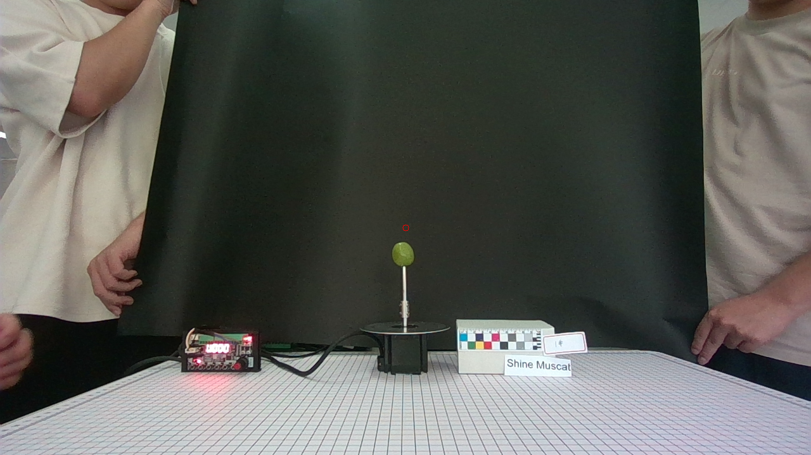
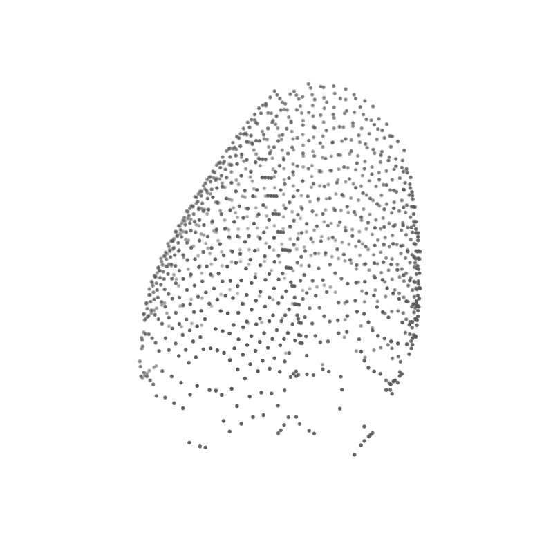

等待彩色相机画面...
当前模块 / Current Module
电机检测
离线调试模式
等待多光谱相机画面...
电机检测 / Motor Check
单片机待接入
旋转平台: 未连接
升降机构: 未连接
步进驱动: 待调试
光源检测 / Light Source Check
紫外与多波段光源相机检测 / Camera Check
USB / 工业相机样品采集 / Sample Acquisition
暗场、白板、彩色图、多波段采集进度: 0 / 12
样品形态分析 / Point Cloud Morphology
RGB-D 数据、点云查看、图片浏览与表面纹理分析
分析后可拖拽旋转点云，滚轮缩放
图片浏览
未加载数据集图片


未开始
0.0s
当前为真实离线模式：点击“导入数据集文件夹”选择包含 color/image 与 depth 子目录的 RGB-D 数据集。
果粉与表面纹理
等待分析
果粉覆盖率--
颜色均匀度--
样品糖度分析 / SSC Analysis
模型预测待接入样品酸度分析 / TA Analysis
模型预测待接入样品口感分析 / Taste Evaluation
糖酸比与综合等级
综合口感等级
--
等待糖度与酸度数据。
相机设定 / Camera Settings
默认参数光源设定 / Light Settings
波段强度预留功能 1.4
后续可接入传感器、电源模块或安全门检测。
预留功能 1.5
后续可接入设备老化测试或异常报警。
预留设置 3.3
后续可接入模型路径、数据保存路径等配置。
预留设置 3.4
后续可接入权限、报告模板或联网设置。